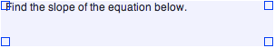
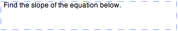

Textboxes can be added to worksheets as question prompts, labels or any other text-related purposes.
Textboxes

Selected textbox on a worksheet
-
Create TextboxTo create a new textbox use one of the following methods:
- In GraphPouch, press Control-T (^T).
- In GraphPouch select .
- Press the New Textbox button
Edit text in Textboxes

Textbox in edit mode
-
You can edit the text in the textboxes by double-clicking with the left mouse button. When in edit mode the textbox will have a blue dashed line around the border indicating that the text can be edited.
When you are finished editing your text you can press the ESC key or click on the Page View.
-
Remove TextboxTo remove a textbox follow these steps:
- Select the textbox you would like to delete by clicking on the textbox using the left mouse button. The selected textbox will have a blue rectangle designating its selected state.
Optionally you can select multiple textboxes by clicking on several textboxes while holding the Shift or ⌘ key. - Press the Delete key.
- Select the textbox you would like to delete by clicking on the textbox using the left mouse button. The selected textbox will have a blue rectangle designating its selected state.
-
Relevant Topics